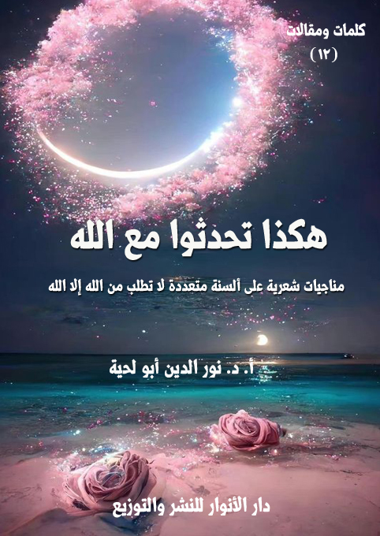

الوصف: مناجيات شعرية على ألسنة متعددة لا تطلب من الله إلا الله
السلسلة: في الأدب الرسالي
المؤلف: د. نور الدين أبو لحية
الناشر: دار الأنوار للنشر والتوزيع
الطبعة: الأولى، 1441 هـ
عدد الصفحات: 119
الكتاب موافق للمطبوع
ISBN: 978-620-3-85928-7
لمطالعة الكتاب من تطبيق مؤلفاتي المجاني وهو أحسن وأيسر: هنا

التعريف بالكتاب
حاولنا في هذا الديوان أن نعبر ـ عبر ألسنة متعددة تخاطب الله تعالى ـ عن كل معاني الشوق والمحبة والرضا وكل القيم الروحية العالية.
ولم نفرق في ذلك بين العامة البسطاء .. وبين العلماء الأفذاذ .. فالكل يخاطب الله تعالى بلسانه، وبحسب ما لديه من المعارف.
ومطلوب الكل ليس أمورا مادية مرتبطة بهذه الحياة، وإنما أن يكون لديهم من الملكات والأخلاق والمواهب ما يجعلهم أكثر قربا من الله .. فأعظم ما طلب من الله ما يقرب منه.
وقد حاولنا فيها أن نستعمل لغة بسيطة يفهمها الجميع بعيدا عن التعقيد والألغاز واللغة التي لا يتذوقها جماهير الناس .. ذلك أنه يمكن التعبير عن الحقائق العالية بلغة بسيطة واضحة يفهمها الجميع .. فتلك هي سنة القرآن الكريم، وسنة الأنبياء وأئمة الهدى .. والتعقيد بدعة حادثة لا علاقة لها بالهدي المقدس.
وقد ابتعدنا كذلك عن تلك الضوابط التي وضعها أهل عصرنا للشعر .. فنحن لسنا ملزمين بأي شرط من تلك الشروط .. والشعر يتطور كل حين .. والعبرة فيه بالذوق، لا بما نضعه من قيود.
هكذا تحدثوا مع الله (5)
من أهم الأساليب التي يستعملها الأدب الرسالي في التعريف بالحقائق المقدسة، والقيم الرفيعة المرتبطة بها ما يمكن أن يطلق عليه [أسلوب المناجاة]
وهو أسلوب مستنبط ـ أولا ـ من القرآن الكريم، ذلك أنه استعمله كوسيلة للتعريف بالحقائق، والتنبيه إلى القيم الرفيعة، التي يحرص السالكون سبيل الله على التخلق بها.
وهو مستنبط ـ ثانيا ـ من الأنبياء عليهم السلام، ومن سار على هديهم من أئمة الهدى، أولئك الذين ورثوهم خير وراثة؛ فأكملوا مسيرتهم، ولم ينحرفوا على هديهم.
ولهذا نجد لكل أئمة من الأئمة صحيفة أدعية خاصة بها.. تمتلئ بكل معاني الجمال والصدق والأدب مع الله.
وعلى ضوء تلك الكلمات النورانية المقدسة حاولنا في هذا الديوان أن نعبر ـ عبر ألسنة متعددة تخاطب الله تعالى ـ عن كل معاني الشوق والمحبة والرضا وكل القيم الروحية العالية.
ولم نفرق في ذلك بين العامة البسطاء.. وبين العلماء الأفذاذ.. فالكل يخاطب الله تعالى بلسانه، وبحسب ما لديه من المعارف.
هكذا تحدثوا مع الله (6)
ومطلوب الكل ليس أمورا مادية مرتبطة بهذه الحياة، وإنما أن يكون لديهم من الملكات والأخلاق والمواهب ما يجعلهم أكثر قربا من الله.. فأعظم ما طلب من الله ما يقرب منه.
وقد حاولنا فيها أن نستعمل لغة بسيطة يفهمها الجميع بعيدا عن التعقيد والألغاز واللغة التي لا يتذوقها جماهير الناس.. ذلك أنه يمكن التعبير عن الحقائق العالية بلغة بسيطة واضحة يفهمها الجميع.. فتلك هي سنة القرآن الكريم، وسنة الأنبياء وأئمة الهدى.. والتعقيد بدعة حادثة لا علاقة لها بالهدي المقدس.
وقد ابتعدنا كذلك عن تلك الضوابط التي وضعها أهل عصرنا للشعر.. فنحن لسنا ملزمين بأي شرط من تلك الشروط.. والشعر يتطور كل حين.. والعبرة فيه بالذوق، لا بما نضعه من قيود.
وهذا ما يهدف إليه الأدب الرسالي الذي لا يدعوه احترامه لما يتوفر من نواح إبداعية موجودة إلى التقليد، وعدم المبادرة بوضع أساليب جديدة، ما دام يمكن أن تجد لها جمهورها الخاص.
هكذا تحدثوا مع الله (7)
يا رب.. أنا البستاني أدعوك..
بين الأوراق والأزهار والأغصانْ
لم أسكن يوما قصرا..
لم أملك يوما عرشا..
لم يعلق على صدري نيشانْ..
لم توضع على رأسي تيجانْ
لكني كنت أفضل من كل من ملك الدنيا..
من كل من ملأ خزائنه بالذهب واللؤلؤ والعقيق والمرجانْ
فقد كان بستاني هو الجنة..
وكان الزهر اليانع فيه روْحي..
وكان الريحانْ
وكان الطير المغرد حولي..
من يغنيني عن كل تلك اللذات..
عن كل الألحانْ
وكنت أرى فيه يارب من كل الألوانْ..
هكذا تحدثوا مع الله (8)
فلي فيه أوركيد..
ولي سوسنة..
ولي توليب..
ولي جوري..
ولي ذاك الزهر المطعم بعطر الكافور..
ذاك الأقحوانْ
ولي في أقصى الحديقة تالة..
وبجنبها كان لي بيلسان
وفي وسط الحديقة كان لي نخلة..
وبجنبها تينة..
وخلفها كان الرمانْ
وكنت أرى في الكل يا رب معناك..
فالزهر لم يحجبني عنك..
والثمر لم يبعدني عنك..
والخضرة لم تصرفني عنك..
بل كان الكل دليلي إليك..
كان الترجمانْ
هكذا تحدثوا مع الله (9)
وكنت أرى في الكل..
وفي الطير المغرد حولي..
والماء المنساب بين السيقانْ
كل معاني الإبداع الذي يملؤني لحضرتك عشقا..
فلذلك لم أحزن..
ولم أتألم..
ولم أتكدر..
وهل يحزن من عاش في ذاك الحان؟
وهل يحزن من عاش يرتشف من عطر الكون نشوانا.. جذلان؟
هكذا تحدثوا مع الله (10)
قصيدة من وحي قوله تعالى: {رَبِّ إِنِّي لِمَا أَنْزَلْتَ إِلَيَّ مِنْ خَيْرٍ فَقِيرٌ} (القصص: 24)، وقد قال الإمام علي في تفسيرها: (والله، ما طلب إلا خبزا يأكله)
يا رب.. إني جوعانْ..
وإني لما أنزلت إلي من خير ظمآنْ
لكني يا رب.. لست ذواقا أتكبر على نعمتك..
أو أرميها بالنقصانْ
فأنا أرضى بكل ما يطعمني جودك..
من كسرة خبز..
أو دشيشة..
أو أجبانْ
أو قُلة فيها بعض الزيت..
أو بعض الخل..
أو بعض الألبانْ
لا أطلب منك يا رب.. أكل الإغريق.. ولا الأكراد.. ولا الرومانْ
لا أطلب أن تطعمني ما يطبخه الروس أو الترك أو الألمانْ
لا أطلب منك يا رب مقّلوبة ولا كبة ولا ثريدة..
هكذا تحدثوا مع الله (11)
ولا ملوخية مصر أو السودانْ
أو تلك التي يخلط فيها اللحم بالجوز أو اللوز..
تلك التي تدعى فاسنجانْ
تلك التي لا يأكلها إلا أهل الترف من أذربيجان.. أو من إيرانْ
أو تلك التي يُخلط فيها ورق العنب بالأرز واللحم..
تلك التي تدعى شيش طاووق..
وتطبخ في سورية.. وفي لبنانْ
وإن كان أصلها من أتراك بني عثمانْ
لا أطلب منك يا رب تكة.. ولا معلاكا.. ولا كبابا.. ولا بريانْ
ولا طحينة.. ولا تفاحية..
ولا تلك التي تنسب للباذنجانْ
يا رب.. فلا تشغلني بأطعمة الدنيا عن ذاك الذي وفرته لنا في الجنانْ
فأنا لا أريد أن أطغى في هذي الأرض..
ولا أن يلهيني الأكل عنك يا رحمنْ
فاجعلني ممن يرضى بيسير القوت..
إلى أن يلقاك ولم يتطلخ بالنيرانْ
واعذرني يا رب عن الوقت الذي أمضيه في الطبخ..
هكذا تحدثوا مع الله (12)
أو في المضغ.. أو تحريك اللسان..
أو الأسنانْ
فأنا لا آكل إلا لأتقوى على طاعتك..
فهب لي من جميل رضاك ما يسكنني الجنة..
في صحبة أهل القرب والإيمانْ
هكذا تحدثوا مع الله (13)
يا رب.. ارحمني فإني رسامْ..
واملأني بكل طاقات التعبير..
وأنزل علي من كل ألوان الإلهامْ
لأعبر عما في صدري من أحلامْ
امنحني القدرة لأصور عطر الزهر..
ورحيق الماء..
وعبق الخزامْ
وأصور صهيل الخيل..
وزئير الأُسد..
وسليل الغزال..
وهديل الحمامْ
وأصور الريح وهي تترنح بين سيقان الأشجار..
والأغصان.. وفي أجواء الغمامْ
امنحني القدرة لأرسم ما في الكون من آيات السلامْ..
وبديع النظامْ
هكذا تحدثوا مع الله (14)
واجعل ريشتي مسبحة تحلق في أجواء القرب..
بكل عشق وغرامْ
واجعل أقلام التخطيط..
وأقلام الفحم..
وكل أنواع الأقلامْ
تصور ما في الكون من إبداع..
من غير حرف ولا صوت..
ولا نبس كلامْ
واجعل ورق الكانسون..
وورق الفابريانو..
وورق الباستيل..
وألوان الماء..
وألوان الزيتِ..
وألوان الزجاج..
وكل ألوان الرسامْ
معارج أرقى بها إليك ربي في حب.. وود.. وتتيم.. وهيامْ
يا رب.. وأعوذ بك أن أجعل ريشتي مهواة لكل ظلامْ
هكذا تحدثوا مع الله (15)
فأستبدل الحق بالباطل..
وأبيع جنات الخلد بذاك الرغامْ
فأعوذ بك يا رب أن تكون رسومي مدعاة..
للتضليل والتحريف والأوهامْ
أو أجعلها أداة لرفع الحياء والأمانة والغيرة والاحتشامْ
أو أجعلها سما يسري بين الأنامْ
لينشر الفتنة والضلال وكل أنواع الآثامْ
فأنا يا رب عبدك الذي لا يرضى أن يكون أداة للسوقة..
أو للإجرام
فاجعلني يا رب أعبدك في ورشتي..
وأنا بين الأوراق والألوان والأقلامْ
واجعل ورشتي محرابا لذكرك في القعود.. والمنام.. والقيامْ
واجعلني وسيلة لنشر الحق والخير بين الأنامْ
هكذا تحدثوا مع الله (16)
مناجاة أستاذ فيزياء يدعو ربه بما ألفه من اللغة التي يستعملها في تخصصه
يا رب.. اعذرني أن أتحدث بلغة أهل الفيزياء..
فأنا مذ كنت صغيرا لم يجتذبني طب..
ولا فلسفة..
ولا علم الأحياء
لم يجتذبني من العلم سوى ذاك الذي أراني قدرتك الباهرة..
في قوانين الأشياءْ..
كل الأشياءْ
فصرت أرى إعجاز صنعتك الحاكمة في الكون وقواه..
في السفل.. وفي العلياءْ
وفي الذرة.. والمجرة..
وذاك الفراغ الموهوم المسمى بالخلاءْ
وفي ثوابت الكون..
وكل القوانين المعجزة الباهرة الغراءْ
تلك التي قضت على كل أوهام الإلحاد..
فصار لا يلحد إلا صاحب داءْ
هكذا تحدثوا مع الله (17)
لم يمنعه عن الإيمان إلا حمق أو غفلة أو جنون أو أهواءْ
وكيف يلحد من يرى تصميم الذرة والمجرة..
والقوانين التي تحكمها..
والطاقات التي تفرزها..
والنظام الذي يعقلها..
وعجيب ذاك الأداء
وكيف يلحد من يرى قدرتك الباهرة في كل صغير وكبير..
وفي كل أنحاء الكون..
وكل الأرجاءْ؟
فاجعلني يا رب أعبدك في محراب الكون..
فلا أغفل عنك صباح مساءْ
وأعوذ بك يا رب من كل من جانب الحق..
بل صار له من الأعداءْ
فصار يتهم الكون بأنه صنع هكذا..
رمية من غير رام..
أو بناء بلا بنّاءْ
وهل يقبل هذا من قضى عمره في البحث عن الأسباب..
هكذا تحدثوا مع الله (18)
والعلل والأنباءْ؟
وهل يقبل هذا من ميز بالعقل والحكمة..
فصار من العقلاءْ؟
فأعوذ بك يا رب أن يصيبني ذاك اللوث..
ذاك الذي أصاب من ضل عن الاهتداءْ
يا رب.. وهبني من لدنك مزيد إدراك..
ومزيد ذكاءْ
لأراك في كل الأشياء..
وأنعم منك بجميل لقاءْ
فكل مناي يا رب أن أخرج من هذي الدنيا..
وأنا معدود في زمر العارفين العلماءْ
لأكون ممن يشهد بالحق وللحق..
ويكون دليلا للخلق..
يحميهم من تلك الظلماءْ
فارزقني يا رب منك معرفة..
واحفظني من ذاك الزهو والكبر والخيلاءْ
هكذا تحدثوا مع الله (19)
يا رب.. إني خياطْ..
وإني لديني ورع محتاطْ
لم أضق بمهنتي أبدا..
وكيف أضيق بمهنة إدريس..
ذاك النبي الخياطْ
ذاك الذي رُفع إلى السماء..
وقد قطع في طريق القرب كل الأشواطْ
ولذا أستن بسنته..
وأسير على هديه بفرح وسرور..
وسعادة ونشاطْ
وقد شئت أن أُرفع بين الخلق..
فالكل يحتاج إلي..
والكل يطلبني..
شيخا كان..
أو من لا يزال صغيرا.. ملفوفا في القماطْ
هكذا تحدثوا مع الله (20)
بل حتى الوزراء والملوك..
وكل من كان من البسطاء..
أو من في البلاطْ
وقد مننت علي يا رب بإتقان الصنعة..
فأنا أتقن كل ألبسة العُرب والعجم والأنباطْ
ولهذا أرى الكل يطلبني..
من القاهرة أو بغداد أو دمياطْ
أو تونس أو الجزائر أو طرابلس أو مراكش أو الرباطْ
وقد مننت علي يا رب بمسحات الجمال التي أضيفها للألبسة..
بلا تفريط ولا إفراطْ
فالبساطة هي الجمال المرضي..
وفي كل الأوساطْ
ولهذا تراني يا رب..
أبتعد عن كل تكلف أو زخرفة من كل الأنواع والأنماطْ
فأنا لا أخيط تلك الثياب الموشاة بالذهب واللؤلؤ..
أو الشنوف الحمر.. أو الأقراطْ
تلك التي اتفق الكل على إضرارها بالنفس والجسم..
هكذا تحدثوا مع الله (21)
من ابن سينا إلى بقراطْ
ولذا فإن كل أعمالي قاصرة على الجبة والقباء..
والقميص والملاءة والأمراطْ
تلك التي يستوي في لبسها عامة الناس..
وفي أرض السواد..
وفي الفسطاطْ
ولم أخط أبدا طيلسانا..
ولا قفطانا..
ولا قطيفة..
ولا بدرونا..
ولا ثَوبَ قِباط
وقد رضيت يا رب بأجر زهيد..
فأنا لا أطلب دنانير الذهب..
ولا الأوقيات الحمر..
ولا القيراطْ
ولم أطلب يوما كاشا.. ولا شيكا..
بل إني أرضى أن أقبض أجري بالأقساطْ
هكذا تحدثوا مع الله (22)
فاغفر لي يا رب.. وأسعدني برضاك..
واجعلني من أهل الرضوان..
لا من أهل الإسخاطْ
لأنال من الدنيا ما نال منها كل البسطاء..
حتى أجوز سعيدا على الصراطْ
فلا أكون من الذين ذكرت أنهم لا يدخلون الجنة أبدا
ولو ولج الجمل سم خِياطْ
هكذا تحدثوا مع الله (23)
يا رب علمني كيف أجول في الأكوانِ.. بلا مرصادْ
وكيف أسافر بين الأقمار..
بلا مركبة.. ولا منطادْ
وكيف أسمع تسبيح النجوم في الأفلاكْ
وكيف أرى نور الكواكب..
وإشعاع الشمسِ..
والنجم إذا يهوى..
والنجم الثاقبِ..
من غير تلسكوبٍ..
ولا مركبةٍ..
ولا كل أدوات الإدراكْ
علمني كيف أقتحم كل تيك الأبعادْ
لأرى جمالك في الأكوان..
مثل الأملاكْ
فأسبحك هناكْ..
هكذا تحدثوا مع الله (24)
بين المجرات.. والسدمِ.. والأفلاكْ
وتغمرني من فضلك ما يبعدني عن كل أشراك الإشراكْ
فالشرك هو الثقوب السوداءُ..
تلك التي تلتهم الكل لولاكْ
هكذا تحدثوا مع الله (25)
يا رب..
يا من قدرت على الخلق في هذي الدنيا الأدواءْ
لا لتعذبهم..
لا لتعاقبهم..
لا لتعاملهم كالأعداءْ
فأنت الرحمن الطبيب الرفيق..
الذي لا تعرف رحمته اللأواءْ
فلذلك يا رب..
كما قدرت الأدواء.. وفرت كل شفاءْ
وأنزلت برحمتك كل دواءْ
ثم مننت علينا بالتشويق..
وكل ألوان العون لنصير من الحكماء الأطباءْ
لتتجلى فينا رحمتك بالخلق..
فنصير لهم حصن وقاءْ..
أو نكون لهم كبش فداءْ..
هكذا تحدثوا مع الله (26)
نضحي بأنفسنا..
لنخفف عن مرضانا كل عناءْ
فكما ألهمتنا يا رب..
لأن نتحلى بهذي الرتبة العصماءْ
أنزلنا بفضلك منازل من جاهد فيك إلى أن مات كالشهداءْ
فنحن نتلقى من مرضانا كل أنواع العدوى صباح مساءْ
فكل فيروس أو جرثوم أو بكتريا..
أو أي وباءْ
نحن أول من يقابله ويضحي..
لا بالمال أو بالجاه..
بل بالجسم والأعضاءْ
فارزقنا يارب معرفة لنعيش في رحاب جنتك الفيحاءْ
تلك التي لا أحزانا فيها..
ولا أمراضا..
ولا أي بلاءْ
فهناك سعادتنا القصوى..
وهناك نرتاح كالشهداء الكرماء الشفعاءْ
هكذا تحدثوا مع الله (27)
يارب.. أنت تعلم أني موسيقارْ
وأني من صغري الباكر ربيت..
بين العود والكمان والقانون والقيثارْ
أردد: الدو.. والري.. والمي..
والفا.. والصول.. واللا.. والسي
وكل ما تعزفه الأوتارْ..
لأقلد ما أبدعت من أصوات العنادل والبلابل..
والأطيارْ
وقد كنت يا رب مع الصبا والعجم والبيات والسيكاه والحجاز..
وكل ما أبدعه الفن..
وكل مقامات الأسمار والأسحارْ
أستشعر كل ألوان الذوق..
وأهتز لكل الأسرارْ
لا تحجبني عنك الموسيقى..
ولا يبعدني عنك الطرب..
هكذا تحدثوا مع الله (28)
ولا تصرفني عنك أنات الناي..
ولا أنغام الأوتارْ
بل كنت يا رب.. أهتز بها شوقا للقاك..
فأنت المبدع لكل فنون الدنيا
ولكل الآلات..
وكل الأنغام..
وكل المشاعر والأذواق والأشعارْ
فارزقني يا رب معرفة..
لأجعل من آلاتي أنغاما حانية تسبحك ليل نهارْ
هكذا تحدثوا مع الله (29)
يارب..
إنك تعلم أني من بدء حياتي لم أقبل إلا ما يقبله عقلي
وكنت أخالف كل من يرميني لذلك بالجهل..
أو ينعتني بالهرطقة..
أو بالزندقة..
أو يهددني بالرمح..
أو بالسيف..
أو بالمطرقة
فلذلك تجرعت كل ألوان الذلِ
وسمعت كل ألفاظ البذاءة من أقرب الناس إلي..
بل من أهلي
لكني يا رب رضيت أن أتجرع السم مع سقراطٍ..
وأُقتل صبرا مع حكيم الإشراق..
ذاك الذي يدعى السهروردي
ذاك الذي قُتل صبرا..
هكذا تحدثوا مع الله (30)
حيث مات في السجن جوعانا
محروما من أبسط أنواع الأكلِ..
ليشبع على إثره جهال..
عاشوا في الظلمات بلا عقلِ
وهل يعقل من أغلق على عقله بكل حديد القفلِ؟
لكني يا رب..
لم أكن كما وصفوا..
فالفلسفة لم تعقلني
ولم تأمرني إلا بالخير والمعرفة.. وكل أنواع الفضلِ
فبالفلسفة عرفت الحق..
وبه ميزت الباطل بكل حدود الفصل
وبالفسلفة عرفتك يارب..
وبها عبدتك..
وخلعت نعلي
لأدخل حضرتك مشتاقا..
بريئا من كل أطياف الجهل
فتقبلني يا رب وزدني إدراكا..
هكذا تحدثوا مع الله (31)
ليتجلى لي الحق كمرآة صافية..
قد هذبت بكل أصناف الصقلِ
هكذا تحدثوا مع الله (32)
يا رب.. إني أدعوك صغيرا..
فاحفظني إن قدرت لي أن أصير كبيرا
احفظ لي حلاوة البسمة في وجهي..
فإني لا أريد أن أكون عبوسا..
مريرا.. قمطريرا
واحفظ لي صفحة قلبي البيضاء..
فإني لا أريد أن أصير حقودا..
خبيثا شريرا
واجعلني يا رب كالمسيح..
ذلك الذي علمته الكتاب والحكمة..
والنطق في المهد..
فكان لبيبا بصيرا
أو كيحي.. ذاك النبي الكريم الذي اصطفيته واجتبيته..
وهو لا يزال مثلي صغيرا
يا رب.. وارزقني من لدنك الهداية والبراءة والبصيرة..
هكذا تحدثوا مع الله (33)
واجعل قلبي نيرا.. كالبدر أو كالشمس المنيرة
ليظل سليما من الأغيار والذنوب.. وكل الآثام..
صغيرة كانت أو كبيرة
يا رب.. لقد أذنت لي في أن ألهو كالأطفال..
وأنا طوع أمرك..
فاحفظني أن يشغلني اللهو عنك..
فأصير أعمى ضريرا
أو كذاك الذي حجبه اللهو عنك..
فصار لك جحودا حسيرا
وعلمني يا رب من كل العلوم التي تنفعني..
فالعلم في الصغر كالنقش في الحجر..
يؤثر تأثيرا كبيرا
وكن لي يا رب حافظا في كل شأن..
وكن لي وليا نصيرا
وكن لي على أولئك الذين يتربصون بي..
وبكل أطفال العالم..
منيعا ظهيرا
هكذا تحدثوا مع الله (34)
واحفظني يا رب من سموم الألعاب والرسوم..
والأفلام الطويلة والقصيرة
تلك التي يدسها الحاقدون علينا في كل صبح ومساء..
وفي حر الظهيرة.. والهجيرة
ليختلط علينا الحق بالباطل..
والخير بالشر..
ونحن صغار..
لنظل في الغي دهرا كثيرا
يا رب.. واجعلني ممن يحبون كتابك..
ويرتلونه..
ويحفظونه..
لأكون في الجنان أميرا
وأكون للخير بين الناس وزيرا وسفيرا
ووفقني يارب في أن أبذل جهدي في دروسي..
فلا أبغض منها جليلا أو حقيرا
فأفهم الحساب والعلوم..
والتاريخ والجغرافيا..
هكذا تحدثوا مع الله (35)
وأتقن الإملاء والنحو..
وكل تلك العلوم الكثيرة
لأنال رضاك ربي..
ويسعد والداي بي..
وأكون بالفوز والنجاح جديرا
وأظفر منك بالأجور الوفيرة
فاستجب يا رب دعائي..
فأنا الذي لا أزال صغيرا..
لم أرتكب من الذنوب غير أني.. وفي رمضان
وفي الليلة الأخيرة منه..
حيث كنا في ليلة الشك.. ننتظر العيد الصغيرا
أخفيت عن أمي بعض الحلوى..
وقدمتها لرفاقي..
عند شط البحيرة
فاغفر لي يا رب..
وأعذني من أن أعود لمثل هذا..
فأنت تعلم أني لم أكن أقصد جرما خطيرا
هكذا تحدثوا مع الله (36)
ولكنهم رفاقي ألحوا علي..
فرحت أفعل ما طلبوه..
ولم أستشر أمي.. فاغفر لي يا رب جرمي
وأعذني من أن أعود إليه
وكن لي بفضلك معيذا مجيرا
هكذا تحدثوا مع الله (37)
مناجاة بلسان امرأة تعبر عن المظالم التي أصابت النساء عبر التاريخ
يا رب.. إني امرأة.. أدعوك بلسان نساء كثيرات
فبرئني.. وبرئ معي كل نساء الدنيا المظلومات
فنحن نعاني من كل ألوان القهر..
ونحن في كل عصور الدنيا محتقرات
فبين العرب كنا نرمى في القبور أحياء موؤودات
وعند الهنود كنا إماء منبوذات
وعند الإغريق والرومان كنا أشجارا مسمومات
وكنا كسقط المتاع..
نباع ونشرى في الأسواق والمنتزهات
وكنا من الميراث.. وجميع الحقوق.. محرومات
وكنا ممنوعين من الكلام في الطرقات
وكانوا يضعون في أفواهنا الأطواق..
وأقفال الحديد.. والصولات
وكانوا يسكبون الزيت الحار على من تتجرأ..
على مخالفة تلك القوانين الجائرات
هكذا تحدثوا مع الله (38)
ويربطونها بذيول الخيل..
ثم يجرونها بأقصى السرعات
حتى أرسطو ذاك الذي يُدعى حكيم الدنيا
ذكر أن الطبيعة لم تزودنا بأي استعدادات
فنحن لا يمكن أن نكون إلا من الناقصات.. العاجزات
وقبله اعتبر سقراط وجودنا سببا لكل الأزمات
وأنا نشبه الريح المسموم..
ذاك الذي يموت كل من شمه من الكائنات
وفي روما اجتمع الحكماء ورجال الدين..
لا لإنصافنا من كل الظلم والظلمات
وإنما للنظر في جنس الروح التي تسكننا
هل هي كروح الرجل.. أم كروح الحشرات؟
وهل ندخل الجنة كالرجال؟
أم أنا في العقبى سنظل من المحرومات
وقد قرروا بعد الكثير من الاجتماعات
أنا نملك أرواحا.. لكن نجسات..
لا تستحق التكريم في دار الدنيا ولا الرحمات
هكذا تحدثوا مع الله (39)
وكأن رحمتك التي وسعت كل الكائنات
ضاقت بنا معشر النساء المظلومات
وهكذا يا رب ظل الظلم يلاحقنا بالويلات
إلى أن جاء هذا العصر الذي توهمنا أنا..
قد خُلصنا فيه من عصور الظلمات
فإذا به مثل سابقه أصبحنا سلعة من السلعات
تتنافس فينا وتتداولنا المصانع والمتاجر والشركات
فحولونا من نسوة محترمات
إلى مجرد ألعوبات ودميات وأيقونات
يا رب.. إنا لم نضق بكل هؤلاء المخلوقات
فهم منحرفون عنك.. ولا ترجى منهم أي خيرات
ولكنا نعتب على من استعمل ما أنزلت من الآيات
لتشويهنا.. ورمينا بكل الضالات الموبقات
لقد اتهمونا يا رب بأنا ناقصات..
لا عقل لنا.. ولا دين.. ولا شيئا من المكرمات
وأنا مجرد كائنات لا دور لها غير الخدمات
وكأنا لم نخلق إلا لتلبية الرغبات
هكذا تحدثوا مع الله (40)
وخدمة ذاك المعتوه المستكبر..
ذاك الذي توهم أنه حاز الكمالات..
كلا.. يا رب.. فأنت أكرم من أن تحرمنا من نعمك السابغات
وأنت أعدل من أن تفضل علينا صاحب الدعوت والادعاءات
ذاك الذي يدعي أنه الأفضل..
لا بالأعمال الصالحات..
وإنما بكونه رجلا..
وهل يمكن للرجولة أن تكون من القربات؟
فقد كان فرعون رجلا..
لكنه كان رمزا للاستبداد والظلم وكل السوءات
وكانت زوجه صالحة..
وكانت مثالا لكل الصالحات
فهل كانت آسية.. تلك التي كرمها الله من الناقصات؟
أم أن زوجها فرعون أفضل منها؟
تبا لكم يا من لا تُعملون ما أنزل الله عليكم من الآيات
الواضحات البينات
يا ليت الأمر اقتصر على هذا يا رب..
هكذا تحدثوا مع الله (41)
فقد جعلونا من أكثر أهل النار عذابا..
وأنا أهل لكل العقوبات..
ولسنا ندري يا رب.. سر كل تيك العقوبات
هل نحن الذين دمرنا الأرض..
ونشرنا فيها الأسلحة الفتاكات؟
وهل نحن الذين أقمنا حروبا جرت ويلات؟
وهل نحن الذين سفكن الدماء المحرمة في كل الأوقات؟
وهل نحن الذين ادعينا الألوهية أو النبوة كاذبات؟
وهل نحن الذين نشرن الدجل وملأنا الدنيا بالتيه والضلالات؟
أم أن أكثر من قام بذلك من يدعي أنه الأفضل في كل الأوقات
ذاك الذي لم يترك شيئا في الأرض إلا أفسده.. وبكل الآلات
فهل يُفضل المجرم المستكبر المملوء بكل الآفات
علينا نحن العفيفات الطاهرات الصادقات
نحن لا ننكر أن فينا من لم يلتزم بالطاعات
وأن فينا من تمرد عليك يا رب.. وعلى كل الخيرات
وقد ذكرت منهن امرأة لوط.. وامرأة نوح..
وكل من لحق بهن من المنحرفات
هكذا تحدثوا مع الله (42)
وذكرت حمالة الحطب.. هي ومن شاركها من النمامات
تلك التي شاركت زوجها في كل الضلالات
لكنك يا رب معهن ذكرت مريم الطاهرة البتول صاحبة الخيرات
وذكرت آسية تلك التي لم ترض إلا قربك في الجنات
وذكرت ملكة سبأ تلك العادلة التي أذعنت للآيات البينات
وجعلت المرأة كالرجل.. لا فرق بينهما في الطاقات
ولا في المواهب والفضائل والقدرات
وأن الفرق فيما كسبت أيدينا..
فمن شاء الخير كان من أهل الخيرات
ومن شاء الشر كان من أهل السوء والضلالات..
ولذلك لا عبرة بجنس المخلوقات..
فالكل سواء عندك يا رب..
وإنما الأمر للاختيارات
تلك التي تميز الطيبين والطيبات
عن كل الخبيثين والخبيثات
ولذلك لا يرى المرء في الآخرة إلا ما اكتسبته يداه..
من الخيرات.. أو من الموبقات..
هكذا تحدثوا مع الله (43)
هذا ما نصت عليه كلماتك يا رب.. تلك المقدسات
فهي التي أخبرتنا أنا سواء في القدرات
وأن الفرق بيننا لا يعدو ما ملنا إليه من الخيارات
فمن كسب خيرا كان من أهل الخيرات
ومن كسب شرا كان من أهل الضلالات
هذه مظلمتي يا رب أعرضها..
ومعي كل النسوة المظلومات..
فبرئ يا رب ساحتنا كما برأت كل الساحات
فنحن لجأنا إليك لتعطينا كل حقوقنا الضائعة
وفي كل الأزمنة والأوقات
ونحن يا رب.. نعلم أنا لن نحرم من فضلك
فأنت الأكرم والأعدل والأرحم
وأنه لا ينجينا إلا فضلك..
فأنت حسبنا من كل من آذانا..
في الماضي أو في الحاضر أو ما هو آت
ونعلم يا رب.. أنك ستكرمنا لأنا لجأنا إليك..
فما ضاع من لجأ إلى من بيده كل القدرات..
هكذا تحدثوا مع الله (44)
فأكرمنا يا رب بالطهر والتبتل والحسنات
لنحشر في صحبة مريم وآسية وفاطمة وخديجة..
أولئك الأربع اللاتي هن قدوتنا في كل المكرمات والكرامات
أولئك اللاتي وهبت لهن كرامة الدنيا..
وفي الآخرة هن من المقربات الشافعات
فشفعهن فينا يا رب.. لنكون من الصالحات
ونقبل عليك يا رب.. وأنت راض عنا
لترضينا.. وتنصفنا..
وتخلصنا من كل المظالم والظلمات
هكذا تحدثوا مع الله (45)
قصيدة على لسان أم تدعو الله تعالى أن يعينها على أداء مسؤولياتها
يا رب.. إني أم.. أحمل كل حنان الأمات
لم أضجر يوما.. ولم أجزع من كل الويلات
لكني كنت أهتز بكل كياني..
إن صدرت من ابني الأنات
وكان الآه يغلبني على نفسي..
إن زفرت من ابني الآهات
فاحفظني يا رب..
فأنا من حفظ كل ما أودعتني من أمانات
واحفظ أطفالي قرة عيني..
فأنا من دونهم لا شيء..
أنا من دونهم كل اللاءات
واجعل حناني وعاطفتي سبيلا لكل الرحمات
فأنا التي ضحيت بحياتي..
لأهب لأولادي الحيوات
يا رب.. وأعوذ بك أن تغلب عاطفتي عقلي
هكذا تحدثوا مع الله (46)
فأسقط في تيه الدركات
وأعاني في ذلك ما يعانيه أهل الزلات
وأسيء تربية أولادي.. فتيانا أو فتيات
وحينها لا ينفعني لا لاتَ.. ولا هيهات
فاسقني يا رب من كل المزنات
فيضا نابعا من ماء المكرمات
لتتشرب روحي عطر كل الخيرات
فأصير كتلك اللاتي كن الفاضلات السباقات
فاطمة البتول ريحانة رسولك.. وبضعته الطاهرة..
أم الطاهرين والطاهرات
أو خديجة الكبرى.. تلك النبيلة الطاهرة
صاحبة بيت القصب في الجنات
تلك التي سلم عليها جبريل.. وأهداها التحيات
أو مريم العذراء البتول.. أم المسيح..
صاحبة المجد والكرامات
أو آسية المضحية.. أسوة كل الصابرات
يا رب.. فاجعلهن مثالي.. حتى أنال منهن البركات
هكذا تحدثوا مع الله (47)
يارب.. إني أم.. وإني لا أفرح إلا بهبوب الخيرات
ليس علي.. وإنما على أولادي.. فهم قرة عيني
وهم مني رَوح الروح.. وشريان الحياة
وهم النور في عيني إن أطبقت علي الظلمات
وهم المعراج لروحي إن تنزلت في الدركات
يا رب.. اعذرني فقد هربت مني الكلمات
ولم أدر ما أطلب.. ولا ما أدع..
فأنت تعلم كل ما في القلب من طلبات
فوفقني يا رب.. وارزقني من فيضك ما يجلو عني الآفات
ولا تدع في بيتي محتاجا.. إلا مننت عليه بالفضل والبركات
واغفر لي يا رب.. في الجلوات والخلوات
لأكون أمتك المرضية.. تلك التي تسعد في دنياها
وفي البرزخ والموقف والميزان والصراط.. وحين الزلات
يا رب.. واغفر لي ما تراه في من حرص أو بخل..
فأنا لست أنانية.. ولا بخيلة.. ولا من الحريصات
ولكني أشعر بعظم ما أودعتني من مسؤوليات
فلذلك أقدم أولادي.. فهم أول من أُسأل عنه..
هكذا تحدثوا مع الله (48)
فاغفر لي يا رب..
وهب لي من لدنك ما يحفظني من كل السقطات
وأبعد عني برحمتك وفضلك كل الآفات
حتى لا يصبح أولادي حجابا بيني وبين الحق..
فالحق هو الأولى والأرفع في الدرجات
هكذا تحدثوا مع الله (49)
قصيدة على لسان زنجي أسود يشكو لله تعالى العنصرية التي يتعرض لها
يا رب.. إني زنجي أسود.. وأنت لا تفرق بين الألوان
لكن الإجرام.. وفي كل الأحيان
كان يفرق بين بيض الخلق.. وبين السودان
وهو لا يعلم أن الألوان ليست سوى طلاء أو دهان
أو مساحيق تكتم أسرار جوهر حقيقة الإنسان
وأنها لا يمكن أبدا أن تكون للحقيقة ترجمان
وهل يمكن للحقيقة الناصعة أن تراها العينان؟
وهل يمكن للجوهر المخبئ في سراديب الغيب أن تدركه الأذنان؟
فالحق أعظم من أن تناله اليدان
والألوان أحقر من أن تمثل حقيقة الإنسان
لأنها مثل الثوب.. أو مثل الأكفان..
وهل يمكن للثوب أن يبرز الحقائق المخفية عن العيان؟
وهل يمكن لذاك الثوب الموشى بكل الألوان
أن يحول من الدميمة سلطانة جمال الزمان؟
وهل يمكن للعمامة أو للطيلسان..
هكذا تحدثوا مع الله (50)
أن تحول من الجاهل عالما في ثوان؟
وهل يمكن للمسبحة أو للمصحف المعلق في الجدران..
أن ترفع صاحبها إلى أعلى الجنان
من دون عمل أو اجتهاد أو تفان؟
وهل يمكن للجندي الجبان.. إذا علق في صدره النيشان
أن يصبح من الأبطال والشجعان؟
يا رب.. أنا أعلم أنك لم تختبرنا بهذه الألوان
إلا لتفرق بين من يعبدها ومن يعبدك..
وأنت الواحد الديان
ولذلك فإنه لا ينجو من أحابيلها إلا من غاص في الذكر والعرفان
فصار يميز بين الجوهر الصادق وطلاء الثعلبان
أو بين الإنسان والحيوان
فالإنسان بلا معرفة ليس سوى بهيمة ترتع في الحقل والبستان
حتى لو كان في ظاهره من أعين الأعيان
يا رب.. وأنا أعلم أنك وإن ابتليتنا معشر السودان
بما يجعلنا عرضة لكل إذية أو احتقار أو امتهان
فإننا نوقن أن فضلك العظيم سينالنا في الجنان
هكذا تحدثوا مع الله (51)
وأننا سنشتري بما ابتليتنا من ألوان
وجوها ناضرة.. ضاحكة.. مستبشرة.. تتيه في جمالها العينان
ونوقن يا رب.. أن تلك الوجوه التي تشتمنا.. ومن قديم الزمان
بكل ما في الحسبان.. وما ليس في الحسبان
أنها هناك.. ستكون باسرة خاشعة عليها غبرة القطران.. وذلة الهوان
وأنها ستبتلى لجهلها وكبرها بكل ألوان الحرمان
فهب لنا من رضاك ما يجعلنا نتجاوز الزمان والمكان
لنعيش في تلك الديار المهيئة لأهل البر والإحسان
وهب لنا من الإيمان.. ما نرى به منازل في الجنان.. رأي عيان
فنكون مثل بلال.. ذلك العبد الذي وضع على صدره الصخران
فكان يناديك.. وهو فرح جذل نشوان
لم يضره عذابهم ولا شتمهم.. لأنه كان ينعم بحقائق الإيمان والعرفان
ولذلك يا رب.. رفعته.. وجعلته على كل لسان
وفي كل آن.. عظيم الشان
فهو قدوتنا الذي نستنير به.. ونسلك دربه..
لا درب أمية أو أبي لهب أو أبي جهل أو أبي سفيان
يا رب.. وارض عنا وأرضنا..
هكذا تحدثوا مع الله (52)
واجعلنا عندك من أهل الرضى والرضوان
ونعوذ بك يا رب.. من أن نسلك سبيل أهل النسيان والكتمان
أولئك الذين عارضوا تدبيرك.. وفي كل شان
بلا حجة ولا دليل ولا برهان
فخسروا أنفسهم.. كل الخسران
وزجوا بها مع أهل جهنم والنيران
فلا هم سعدوا في هذا المحدود من الزمان والمكان
ولا هم سيسعدون هناك..
وهل يسعد من سلك سبيل أهل الغي والأحزان؟
هكذا تحدثوا مع الله (53)
مناجاة تصف بعض جرائم الأمريكيين في التاريخ والواقع
يا رب.. إني أمريكي.. فاقبلني..
ولا تؤاخذني بتيك الجنسية
فأنا لا أرضى أبدا عن جرائمها..
تلك التي فاحت في كل أرجاء الكرة الأرضية
لتنتشر في كل جهات العالم.. شرقية كانت.. أو غربية
بل امتدت إلى الآفاق العلوية
لتخرب الأوزون.. والأغلفة الجوية
وكيف لا تفعل ذلك يا رب..
وهي التي تمرنت مذ جاءت إلى هذي البرية..
على كل جرائم القتل والتخريب واللصوصية
لقد بدأت بإبادة الهنود الحمر..
وكل الشعوب الأصلية
وكانت ترسل البطانيات إليها كهدية
ولم تكن تحمل في طياتها خيرا ولا مزية
بل كانت تحمل الجدري.. وكل الأمراض المعدية
هكذا تحدثوا مع الله (54)
وهكذا قضوا على تلك السلالات البشرية
وكأنهم ذباب أو بعوض.. أو حشرات مؤذية
ولم يكتفوا بذلك يا رب..
بل إنهم راحوا لكل الشعوب الأخرى..
يذيقونها كل ألوان العذاب الشقية
ففي اليابان أرسلوا قنابلهم الذرية
وبعد أن دمروا هيروشيما ونجازاكي..
وكل ما فيهما من بشر ونبات.. وكل المظاهر الحية
صرح الرئيس الأمريكي بكل هدوء وأريحية:
وأخيرا.. لقد أصبح العالم الآن في أيد أمريكية..
الرعب قد عم العالم.. لأنا نملك القنبلة النووية
وهكذا.. ساروا في الأرض مثل سموم الحية
يزرعون الرعب والموت أينما حلوا..
وبكل برودة.. وبكل أريحية
فقد قتلوا الملايين في الصين وفيتنام والأراضي الكمبودية..
وكل البلاد الكورية..
ثم مروا إلى البلاد العربية..
هكذا تحدثوا مع الله (55)
فضربوا العراق وسورية ولبنان والأراضي الفلسطينية..
وكل من لا يسير على دربهم من جميع البلاد الإسلامية
وكانوا سندا دائما للصهيونية..
يغذونها بكل ما تحتاجه من أدوات القهر والاستبداد والجاهلية
ولم يكتفوا بالتقتيل في كل تلك البلاد..
بل كانوا يمارسون كل أشكال القهر والظلم والعبودية
ومن ذا ينسى استرقاقهم لأحرار إفريقية..
وكيف كانوا يسيمونهم كل ألوان الخسف..
وكل أشكال العنصرية
وكانوا يستعملون في حروبهم كل أنواع الأسلحة الوحشية
ويضربون المناطق الآمنة.. المدنية
بكل الأسلحة الجرثومية.. والكيميائة.. والذكية.. والعنقودية
وكل ما تسول لهم شياطينهم من أدوات الفتك والدمار..
وغيرها من الأساليب الشيطانية
ولم تكن تلك يا رب وحدها جرائمهم المردية
بل إنهم فاقوا عادا وثمود.. وكل القبائل البدائية
وفاقوا في انحرافاتهم الأخلاقية
هكذا تحدثوا مع الله (56)
كل ما مارسته سدوم وعمورية
وفاقوا في انحرافاتهم اللصوصية
كل لصوص العالم..
وكل قطاع الطرق على مدار تاريخ البشرية
يا رب.. أتوب إليك.. فإني وإن كنت منهم..
إلا أنني لم أكن أرتضي سلوكاتهم الجاهلية
وكنت أنكر عليهم في السر والعلانية
وكنت أحمل لهم كل ألوان الكراهية
فاقبلني يا رب.. واجعلني من الفئة المرضية
تلك التي سلمت لك.. وخضعت بكل طواعية
فأنت أكرم من أن تحملني جرائرهم اللاأخلاقية..
فلا تزور وازرة صالحة وزر أخرى باغية
هكذا تحدثوا مع الله (57)
مناجاة على لسان أب يشكر الله تعالى على توفيقه للقيام بواجباته نحو أبنائه
يا رب.. إني والد.. لي أربعة من الأولاد
فاطمة وزينب.. وعلي.. والمقداد
وها أنذا أنهيت واجبي نحوهم.. أو كاد
فاغفر لي ما كان من تقصير..
واقبل ما كان من رشد أو سداد
لأقبل عليك وأنا بريء الذمة من كل حق للعباد
أنت تعلم يا رب..
أني كنت في سبيلهم مجاهدا بكل ما لدي من عتاد
وقد أخبرنا نبيك بأن سعينا للرزق من أنبل الجهاد
وأنا موقن بذلك..
ولذلك قضيت عمري كله بين الهضاب والوهاد
أطوف الأرض والبلاد
وأعمل عند كل أصناف العباد
من كان منهم راحما ولينا..
أو قاسيا جلفا غليظا كالجماد
هكذا تحدثوا مع الله (58)
ولم أكن أشتكي يا رب ما يمر بي من أزمنة شداد
ولا ما يعيقني في مسلكي مما يدسه الأعاد
لم يكن همي سوى أن أطعم الحلال للأولاد
فالحلال هو مبدأ الهداية ومنشأ الرشاد
وأكله عبادة.. مارسها العُبّاد
ولم يكن همي قاصرا على ما تحتاجه الأجساد
بل كنت أغذي أرواحهم بكل معاني الخير والسداد
فقد كنت أدعوهم للصلاة في وقتها..
بل في أول الميعاد
وأخبرهم بأن التقوى والصلاح والإحسان خير زاد
وكنت أنبههم كل حين لرحلة المعاد
فأذكر لهم الموت والبرزخ والموقف..
وكل ما ينتظر العباد
وكنت يا رب أنذرهم بما يلاقيه المجرمون من شداد
وكنت أرغبهم بما يلاقيه الصالحون من إمداد
وكنت أحكي لهم قصص العباد والزهاد
والعارفين بربهم.. أولئك الأوتاد
هكذا تحدثوا مع الله (59)
حتى لا تبهرهم هذه الحياة أو تصطادهم كفريسة الصياد
وكنت لا أكتفي بالتوجيه والنصح والإرشاد
أو بالكلام المجرد عن الفعل الخالي من الإسناد
بل كنت يا رب.. أشاركهم في كل شيء..
ليسمو الخير فيهم أويزداد
ولم أكن يا رب أمارس عليهم أي ضغط..
أو تسلط أو استبداد
ولم أكن أقهرهم أو أشعرهم بأي خوف أو إرعاد
فقد حذرنا نبيك إن فعلنا ذلك..
أن نحشر مع فرعون والنمروذ..
أو مع قوم ثمود.. أو قوم عاد
أو أهل إرم ذات العماد
إن نحن كنا في أهلنا طغاة أو ذوي عناد
ولذلك يا رب.. كنت أدعوهم إلى الخير والأمجاد
بكل لطف وسلاسة وحنكة وسداد
يا رب.. وها هم بحمدك قد بلغوا سن الرشاد
وكلهم بفضلك أهل بر وخير وتقوى ووداد
هكذا تحدثوا مع الله (60)
وكلهم يا رب أهل أقلام وقراطيس ومداد
وكلهم يا رب قد حاز في دنياه كل صنوف الإسعاد
فبعضهم مهندس.. ما أكثر ما خطط أو شاد
وبعضهم أستاذ في المدارس الجياد
وبعضهم واعظ تلين له القلوب أو تنقاد
وبعضهم طبيب يزوره المرضى من كل واد
وكلهم يا رب بار لا يعرف العقوق والعناد
وأيامي معهم كلها سرور أو أعياد
وها أنا يا رب أشكر فضلك علي بالإمداد
حتى أطعمتهم من الحلال الخالص عن شوائب الفساد
وربيتهم على الهدي المطهر من كل ما دسه الأوغاد
فارزقني بركات فضلك يا رب في الدنيا ويوم الحصاد
حين يلاقي الخلق كل ما عملوه حاضرا كتحفة المرتاد
هكذا تحدثوا مع الله (61)
مناجاة في الشوق إلى الإمام المهدي المنتظر وبيان معنى الانتظار الإيجابي
يا رب.. إني من فرط انتظاري لوعدك.. صرت أُدعى منتظر
فأنا في حياتي كلها.. مذ ولدت.. وفي الصغر
وفي شبابي الباكر.. وفي كهولتي.. وفي خريف العمر..
لا أزال أنتظر
لم أملّ لحظة.. ولم يصبني انزعاج.. أو ضجر
فكل مناي أن أرى ذلك الوجه البهي الجميل الأغر..
البادي في الآفاق كالشمس والقمر
وأين منه الشمس والقمر؟
وأين منه الشعرى والجوزاء.. والنجوم الأخر؟
يا رب إن كل مناي أن أظفر منه بنظر
لأسعد بذلك طول العمر
فما أحلى أن ترى عيناي ذاك النور المستتر
ذاك الذي يبدو من خلال السحب كشعاع شمس منتشر
يملأ النفس سرورا.. والحياة بالدرر
يا رب.. فأنعم علي بالنظر..
هكذا تحدثوا مع الله (62)
لأطفئ حرارة الشوق المستعر
فهو يكاد يحرق مني القلب والضلوع والصدر
وأنعم علي بأن أعيش ولو دقيقة في زمن ذاك الأغر
لأرى فيه بقية الأنبياء والأولياء الكبر
ذاك الذي يحقق أحلام جميع البشر
فيملأ الأرض بالعدل..
ويقضي على كل غرور واستبداد وظلم وكبر
وبه الباطل يذوي.. وبه يندحر
وبه الحق يعلو.. وبه ينتصر
وبه الدين يعود جديدا ناصعا..
خاليا من كل كدر
وبه يعود الأمر إلى نصابه بعد أن كان هجر
وبه يهتدي الخلق إلى الحق..
فيدخل في دين الله أفواجا.. جميع البشر
وكيف لا يهتدون.. وهم يرون الحق باديا للنظر
يا رب.. إني وإن كنت لا أزال أنتظر
فإني لست كذاك الكسول القاعد المستسلم للقدر
هكذا تحدثوا مع الله (63)
ينتظر أن يُخلص من غير جهد أو مجاهدة أو ضرر
كلا.. يا رب.. فأنا أعمل جنديا في حزب المنتظر
أمهد له البلاد والعباد..
ليملأ الأرض اسمه.. وينتشر
ويصبح الكل جنودا لذاك الذي يشتاق له الزمان والدهر
وأنا أفعل ذلك يا رب بكل شوق وجد.. وأفتخر
فما أجمل أن أكون صاحبا لذاك الذي هو للزمان عطره.. والزهر
ذاك الذي هو نور الكون.. وبه الكون ازدهر
ذلك الذي به تحيا الحياة.. ومن دونه الكل قُبر
ذاك الذي لا يصحبه إلا كل صديق وحر
ذاك الذي من جوده المحيط والنهر والبحر
ذاك الذي بشرت به الأنبياء والأولياء..
وكل السادات الكثر
ذاك الذي هو للحياة طعمها.. وعزها.. ونداها.. والقطر
ذاك الذي نص عليه القرآن والحديث والأثر
ذاك الذي اتفق على انتظاره كل البشر
وكل الديانات حدثت عنه..
هكذا تحدثوا مع الله (64)
وكل الكتب وكل الدفاتر والزبر
وهو مذكور في كل الآي والسور
فكل آية تبشر بالنور أو بالحق أو بالنصر
تشير إلى أيامه.. فهي أيام النصر والظفر
وكل آية تدعو إلى الإعداد والجهاد والصبر
تشير إلى الإعداد للتمهيد لتلك الأيام الغرر
وكل آية تدعو إلى الاصطبار والصبر
تشير إلى ذلك الظلام الذي يسبق ذياك الفجر
وهكذا يمكننا أن نقرأ في كل الفرقان والذكر
ما يكون عبرة للمدكر
يا رب.. وأعوذ بك أن أكون من أعدائه..
أولئك النواصب الحاقدون الفاجرون الغُدُر
أولئك الذين يناصبونه العداء والجحود والكفر
أولئك الذي يكذبون به.. ويحذرون منه..
ويضحكون من كل عبد شائق أو منتظر
أولئك الذين يوالون قاتلي أجداده.. ومن رموهم في الحفر
أو شردوهم عن ديارهم.. أو نحروهم في النحر
هكذا تحدثوا مع الله (65)
أو وضعوا في طريقهم كل أنواع الأذى..
وكل شوك أو جمر
أو رموهم بكل داهية.. وسقوهم السم والحنظل والداء الأمر
يا رب.. فأعوذ بك أن أكون مثلهم..
فأسقط في مهاوي الضلال والكبر
وأمتلئ بالغرور والعجب..
وأسلك كل درب وعر
يا رب إني منتظر.. وإني لا أزال أنتظر
حتى لو لو يبق من عمري رشفة..
حتى لو كنت على فراش الموت أحتضر
فهب لي من الصدق والجد والاجتهاد والصبر..
حتى أكون أهلا للقاء المنتظر
هكذا تحدثوا مع الله (66)
مناجاة غني يشكر الله تعالى على توظيفه لماله في الخير وعدم تأثيره السلبي فيه
يا رب.. إني أدعوك..
وأنا ممن اختبرته بأن يكون من أهل المال والثراء
لم أبت يوما جائعا.. ولا في العراء
ولم أذق ولو لحظة من حياتي جوع الفقراء
ولكن ذلك يا رب لم يطغني أو يردني..
أو يجعلني من أهل الغفلة والجفاء
فأنا مذ كنت صبيا يافعا.. وأنا أرفع يدي إليك بالتضرع والدعاء
وأنا في كل أحوالي أشعر بالعجز والفقر والعناء
وأنا أسبحك بكل كياني..
وأنشر عنك ما أطقت من الثناء
فالنعمة يا رب.. لم تبعدني عنك..
كما لم يبعدني عنك البلاء
فأنا عبدك في كل حال كنت..
من الفقراء أم من الأغنياء
يا رب.. إني وإن لم أكن من الفقراء
هكذا تحدثوا مع الله (67)
إلا أني لم أعش كما يعيش الأمراء
ولا أهل الترف من الذين كان لهم بقارون اقتداء
ولا كنت يوما محبا للمال..
ولا كنت متيما بذاك الهباء
بل كان هو والتراب والحجر عندي سواء
فأنا عبدك.. لا عبد الأشياء
ولذلك كان المال في جيبي..
والقلب منه خلاء
وكان الكل يعجب من حياتي..
ويملؤني بالسخرية والاستهزاء
ويتهموني بأني من البخلاء
لأني أعيش مثلما يعيش العامة البسطاء
وهم لا يعلمون أني أشعر أن مالي ليس مالي..
وإنما مالك.. فأنا لست سوى وكيل من الوكلاء
استخلفتني فيه.. لأديره بحسن أداء
لا لأبذره.. أو تتلاعب بي معه الأهواء
فلذلك يا رب.. شيدت به كل ما هداني إليه إلهامك من بناء
هكذا تحدثوا مع الله (68)
بنيت به المستشفيات والمعامل والمدارس العصماء
ووظفت فيه الكثير من المحتاجين والأجراء
ولم أترك فرصة للمتربصين من الأعداء
أولئك المترفين السفهاء
الذين يتلاعبون بالأموال التي هي قوام الحياة والأحياء
ولذلك كنت أقتحم كل الأجواء..
لا لأضيف لخزائني مالا أو بعض ثراء
وإنما لأحمي مال الأمة من المفسدين المجرمين الأشقياء
وأحميها من تلك المشاريع الغبية الخرقاء
تلك التي تريد أن تجعل من عبادك عبيدا للأهواء
يا رب.. فتقبلني من المجاهدين في سبيلك..
وإن مت.. فتقبلني من الشهداء
فأنا لم أقصد هذي الدنيا..
وإنما قصدي تلك العلياء
وقد كان يا رب.. قدوتي فيها سليمان ذاك النبي الكريم المعطاء
ذاك الذي لم يحجبه ماله عنك.. وهل يحجب المال الأنبياء؟
فأنا على دربه يا رب أسير.. كما سار أغنياء الأولياء
هكذا تحدثوا مع الله (69)
أولئك الذين كانوا من العارفين العابدين الفضلاء
الذين كان الناس يتوهمونهم لبساطتهم وحالهم من الفقراء
مع أنهم كانوا من أهل الأموال والنعماء
وما ذلك إلا لعلمهم بأن المال محض اختبار وبلاء
فمن دبره بالورع والتقوى والزهد كان من السعداء
ومن دبره بالهوى والطمع والحرص كان من الأشقياء
يا رب.. فاجعلني من أولئك الأولياء الأتقياء
لأتحرك فيما وهبتني كما يتحرك العقلاء
وأعوذ بك أن أكون كأولئك المغفلين الأغبياء
من باعوا عز الأبد ببعض رخاء
أولئك الذين بغوا على قومهم كقارون..
ذاك الذي أخذته العزة والخيلاء
ولم ينسب ماله لله.. وإنما للكيمياء
فخسف الله به وبداره وبكل ما يملكه من أشياء
فلا هو نعم في الدنيا كما ينعم الأحياء البسطاء
ولا هو سينعم في الآخرة كما سينعم المتقون السعداء
يا رب.. فأعوذ بك أن تحجبني لحظات الدنيا العمياء
هكذا تحدثوا مع الله (70)
عن ذاك الذي أعددته لأهل الفضل والنعماء
أولئك الذين بمجرد أن يغمسوا في الجنة بعض الآناء
ينسون كل ما لا قوه في الدنيا من فقر ومرض وبلاء
وعلى عكسهم أولئك الذين عاشوا في الدنيا سفهاء
فبمجرد أن يغمسوا في النار لحظة ينسون كل عيش السعداء
يا رب.. فاجعلني عبدك وحدك..
لا عبد الذهب.. ولا الفضة.. ولا البيضاء.. ولا الصفراء
لألقاك يا رب.. وأنت راض عني..
لأحشر مع أحبابك من أهل الصفو والصفاء
أولئك الذين سلمت قلوبهم من دنس الدنيا الغبراء
هكذا تحدثوا مع الله (71)
مناجاة فقير يستغفر الله تعالى على سوء فهمه للابتلاء الذي وقع له
يا رب.. إني أدعوك.. وأنا الذليل المسكين الفقير
أنا الذي عشت حياتي واهما أني وحدي المبتلى بالحاجة
وأني وحدي.. ذاك السجين الكسير
وأني وحدي.. ذاك الكئيب الحسير
ولذلك كنت أشكوك من غير قصد
وأشكر جور ما قدرته من مقادير
كنت أذكر عيشي.. ذاك الجاف القتير
وأذكر بيتي.. ذلك الطيني الضيق الصغير
ذاك الذي لا شيء فيه من المتاع..
لا الجليل.. ولا الحقير
ولم أكن أرى ما وهبتني من الكرم والفضل الوفير
لم أكن أرى أهلي وأولادي.. الصغير منهم والكبير
أولئك الذين يشعرون ـ رغم ما هم فيه ـ بالعيش القرير
ويضحكون ملء قلوبهم.. وكأنهم في غرف الجنان..
لا في درك السعير
هكذا تحدثوا مع الله (72)
وكنت من بينهم ذاك الكئيب المحبط الحسير
لكني اليوم.. أتوب إليك من ذلك الإنكار..
وذاك النكير
فقد امتلأت بالبشارة والرضا..
فأنا اليوم بها المبشر والبشير
لم أعد يا رب ـ كما كنت ـ أنازعك مقاديرك..
فأنت العليم القدير
وأنت بمصالح عبادك اللطيف الخبير
لقد شاء لطفك يا رب أن أمر اليوم بذلك القصر الكبير
ذاك المشبه بالخَوَرْنَقِ وَالسّدِير
ذاك الذي حُفت به الأشجار والماء الغزير
ذاك الذي الكل يعرفه..
والكل يعظم صاحبه الغني الشهير
ذاك الذي كنت أحسده في كل حال..
في الصباح.. وفي الهجير
لكني كنت مخطئا.. بل كنت في وهم كبير
لقد شاء لطفك يا رب.. أن أدخل عليه اليوم..
هكذا تحدثوا مع الله (73)
لأرى ما كان يخفيه ذلك القصر الكبير
دخلت إليه مثلما يدخل كل أجير
فانبهرت بادي الأمر بما فيه من متاع أنيق وثير
وما فيه من الزهر المضمخ بالعبير
وما فيه من الرياش.. ومن الحرير
لكني فجأة رأيت صاحبه.. وكأنه عبد ذليل..
وفي قصره كأنه سجين أسير
اجتمع في قلبه كل ألوان الحزن والألم العسير
كان يبكي والطوفان من عينيه يسيل كالغدير
فاقتربت منه لأسأله عن حاله..
وعن سر الشهيق والزفير
فقال لي والعبرات تخنق صوته:
خذ كل ما شئت من مالي.. من الدراهم والدنانير
وخذ قصري الذي تشبهونه بالخورنق والسدير
وأعطني بعض السلام الذي تعيشه في ذلك الكوخ الحقير
فأنا ضقت من هذي الحياة..
فكل ما فيها مرير
هكذا تحدثوا مع الله (74)
فكل أولادي أخذوا ما شاءوا من المال الوفير
وبعثروه في كل شأن..
ولم يراعوا حرمة الشيخ الكبير
وها أنذا كما تراني..
أعيش في الظاهر في الجنان
لكن باطني يحرق في حر السعير
لا أستسيغ أي طعم..
وهل يستسيغ الطعم محروق الضمير؟
لقد شعرت اليوم أن كل من حولي غني..
وأنا من بينهم ذاك الفقير
وهكذا يا رب راح يحدثني عما مر به من الدقيق والكبير
وكيف خانه الكل.. حتى ذاك المدير
ذاك الذي كلفه برعاية أملاكه..
فراح يثبت أنه بالخيانة والمكر والخداع أجدى جدير
وأخبرني كيف عاش كل ألوان الهم والغم
في ظلام الليل.. والصبح المنير
إلى أن خرجت من قصره يا رب..
هكذا تحدثوا مع الله (75)
وأنا أشعر أني أنا الأمير..
وأنا الوزير
وأن بيتي هو الخورنق والسدير
وأن الجنة عجلت لي في دنياي..
لا ذاك السعير
فاغفر لي يا رب سخطي ونزاعي للمقادير
فأنا راض بفضلك..
فالرضا هو السعادة التي لا سعادة فوقها
ولا كفء لها.. ولا نظير
هكذا تحدثوا مع الله (76)
مناجاة قاض يشكر الله تعالى على توفيقه على أداء ما كلف به من شؤون القضاء
يا رب.. إني أدعوك.. وأنا الذي ابتليتني بشؤون القضاء
أجلس في المحاكم كل يوم..
لأقضي بين الخصماء
بعضهم أدينه..
وبعضهم أعطيه البراء
وبعضهم أرميه في السجن سنين طوالا..
إلى أن يمل الثواء
وبعضهم أحكم عليه بالقتل والقصاص..
وسفك الدماء
وبعضهم أحكم عليه بالغرامات والضرائب..
ووجوب الوفاء
وهكذا يا رب.. لا يكاد ينجو أحد ممن يقترب مني..
كان من المقربين الأصدقاء
أو من المبعدين الأعداء
فقد كان الكل عندي في مجلس القضاء سواء
هكذا تحدثوا مع الله (77)
وقد عرضني ذلك يا رب.. لكل صنوف البلاء
فبعضهم يقدم لي هدايا ثمينة.. يسميها حباء
لكني كنت أرفضها بشدة لأنها لم تكن غير رشاء
والراشي والمرتشي ملعونان في الأرض والسماء
والبعض يا رب.. يهددني صباح مساء
أو يهدد ولدي..
أو ما أملكه من أشياء
والبعض يا رب.. يكيل لي من كل صنوف الهجاء
وآخرون على عكسهم يكيلون لي من كل صنوف المديح والثناء
وأنا ـ بفضلك يا رب ـ لا يثنيني عن الحق هجاء ولا ثناء
ولا يبعدني عنه تهديد.. ولا إقصاء
وكيف يبعدني عن الحق كل ذلك..
وعن غيره من أنواع العناء
وأنا أؤمن بيوم اللقاء
ذلك اليوم الذي يكون فيه القضاء
ذلك اليوم الذي توضع فيه الكتب والموازين..
ويُستدعي فيها الشهداء
هكذا تحدثوا مع الله (78)
ذلك اليوم الذي لا يضيع فيه مثقال ذرة..
أو ما تحت الهباء
في الأرض.. ولا في السماء
ذلك اليوم الذي ينتصف فيه من كل الخصوم والأعداء
ذلك اليوم الذي يتحول فيه الظلم إلى ظلمات ظلماء
وتتحول فيه العدالة والحق والخير إلى أنوار وضياء
يا رب.. فاجعلني من عبادك الأمناء الحكماء الأتقياء
أولئك الذين استنوا بسنن الأنبياء والأولياء
فلم يتركوا الحق لأجل لوم اللؤماء..
ولا ثناء المتملقين السفهاء
يا رب.. وهب لي من جميل الفهم والذكاء
ما وهبته لعبدك سليمان من جميل الاهتداء
فتسنى له أن يحكم بما يتوافق مع جميع الأمزجة والأهواء
فأرضى الكل.. فاستحق منك جميل المدح والثناء
يا رب.. وأعوذ بك من أهل المكر والدهاء
أولئك الذين يقلبون الحق باطلا..
ويتلونون تلون الحرباء
هكذا تحدثوا مع الله (79)
ويتلاعبون بالقوانين بحسب ما تدعوهم إليه الأهواء
فأبعدهم عني يا رب..
واجعلني من النبهاء الفطناء
حتى لا ينطلي علي ما يزينون به الباطل من طلاء
هكذا تحدثوا مع الله (80)
مناجاة امرأة أخذ الزلزال كل أهلها، ولم يبق لها من الدنيا شيئا.. فأخذت تخاطب ربها، وتقول:
يا رب.. إني أدعوك.. وأنا الحزينة المبتلاة
أخذت مني بلطفك الآباء والأمهات
والبنين والبنات
والإخوان والأخوات
ولم يبق لي الزلزال الذي أرسلته بلطفك
من الدنيا سوى هذا الفتات
وأنا أستغفرك ربي من كل ما عرض لي من الأحزان والآهات
أو تلك الصيحات والأنات
فأنا لم أكن أقصد الاعتراض عليك يا رب
وإنما كنت أنفس عن نفسي ما عرض لها من الكربات
وأنا موقنة أن فضلك لا محالة آت
وأن ما عرض لي ليس سوى ابتلاء من الابتلاءات
وأن أعظم المنح والبركات
هكذا تحدثوا مع الله (81)
ستليها.. وفي أقرب الأوقات
فأنت يا رب مصدر النعم والخيرات
وأنت يا رب العوض عن كل ما فقدته في هذه اللحظات
يا رب.. فارزقني اللقاء بكل من فقدتهم من الأهل في الجنات
هناك.. حيث لا أحزان.. ولا آهات.. ولا أنات
هناك حيث نلتقي جميعا في الروضات
هناك حيث نسعد جميعا بقربك في الجنات
يا رب.. وأنزل علي من لطف اليقين ما يقيني من كل الشبهات
تلك التي يرسلها الشيطان لمن يسلك سبيله من الغواة
فيوهمهم أن ما عرض لهم من المحن والبليات
شر محض.. ليس فيه شيء من الخيرات
أف لهم.. ولكل تلك الترهات
فهم لا يعرفونك يا رب..
ولذلك يقعون في تلك المنكرات
فيعيشون الأحزان والآهات
ولا يجدون ما يخفف عنهم من المبشرات
تلك التي أخبرتنا عنها في الآيات
هكذا تحدثوا مع الله (82)
فالموت ليس نهاية الحياة
وإنما بداية الحياة
والموت ليس القطيعة التي تبعدنا عن أحبابنا
وإنما البداية للجميل من الصلات
فنحن سنلتقي أحبابنا..
وفي أجمل الحالات
وهناك سنرى ما ادخرته لنا يا رب من الكرامات
وهناك نوقن أن ما فاتنا كان الخير فيه في الفوات
وأن كل شيء كان في محله المناسب له
فأنت يا رب العليم بكل شيء مضى..
وما فات.. وما هو آت
يا رب.. فارزقني من جميل الرضا ما رزقته لإمائك الصالحات
ارزقني جميل صبر زينب..
تلك التي شاهدت في كربلا الكربات
تلك التي رأت إخوتها وأهلها ينحرون في الفلوات
فلم تعترض على قضائك يا رب..
بل سلمت لك تسليم المؤمنات
هكذا تحدثوا مع الله (83)
وقالت للظالمين الطغاة الجناة:
لم نر من ربنا غير الجميل والمكرمات
وما ترونه أيها الظالمون العصاة
ليس سوى قرابين وقربات
قدمناها لربنا ليجعلنا في جملة الأئمة الصالحين الهداة
أولئك الذين سيبقى ذكرهم.. وفي كل الأوقات
حين تلعنكم كل الأجيال.. وبكل اللغات
يا رب.. فارزقني صبرها ورضاها لأكون من المؤمنين التقاة
أولئك الذين ينجحون في كل ما يمتحنون به من الكلمات
هكذا تحدثوا مع الله (84)
مناجاة أستاذ رياضيات يدعو ربه بما ألفه من اللغة التي يستعملها في تخصصه
يا رب علمني كيف أسير إليك من غير حدود.. ولا آفات
ولا أزمنة.. ولا أمكنة.. ولا ميقات
علمني كيف أتجاوز الجبر والهندسة والتحليل..
وكل القيود التي تبحث فيها تلك التي يسمونها: رياضيات
علمني كيف أعبر محيط دائرة الألوان والأشكال والموجات
وكل الزمر والمجموعات
بلا فرجار..
ولا مسطرة..
ولا منقلة..
ولا كل الآلات
علمني كيف أقضي حياتي في التسبيح والتحميد والصلوات
من غير أن يحجبني التكامل..
ولا التفاضل..
ولا المشتقات
علمني كيف أتجاوز كل سجون المربعات والمثلثات
هكذا تحدثوا مع الله (85)
وكل سجون المعينات..
والمستطيلات..
والمكعبات
علمني كيف أتجاوز كل المعادلات
والمتراجحات.. والدالات
فأنت أعظم من أن تحصرك الأعداد..
ولا الأشكال..
ولا تيك النظريات..
علمني كيف أشتق من أعداد الكون ما يقربني منك..
فلا أنحصر في دائرة الأعداد..
بل أتجاوزها إلى ما لانهايات
خلصني من كل قيود فيثاغورس وطاليس وإقليدس..
والخوارزمي.. والخوارزميات
وكل من فات من علماء الأعداد والأشكال..
أو ما هو آت
لأسير إليك في خط مستقيم..
لا انثناءات فيه..
هكذا تحدثوا مع الله (86)
ولا انحناءات
علمني كيف أعبر دائرة الرياضيات
ومحيط الهندسة
وأسوار الدالات
لأسير إليك في عالم الإطلاق الذي لا حدود له
لا في البدايات
ولا للنهايات
هكذا تحدثوا مع الله (87)
مناجاة على لسان ملحد أصيب بكورونا، وعرف من خلالها عجزه وتهافت الفلسفات التي كان يؤمن بها:
يا رب.. إني أدعوك بكل خجل وحياء
أنا المغفل الذي كنت أجهلك قبل الوباء
كنت أتعامى عن دقيق صنعتك للأشياء
وأتجاهل تعاليمك المقدسة الطاهرة الغراء
تلك التي تهذب النفس وتطهرها..
وترفعها لمصاف العظماء
لكني كنت أسخر منها..
وأقدم عليها تلك التعاليم الشيطانية الرعناء
تلك التي يبثها دوكينز.. وهاريس.. وكريستوفر.. ودينيت
وغيرهم من شياطين الأهواء
عبر قنوات الأرض والفضاء
وعبر كل وسائل التواصل.. وكل الأجواء
ليحولوا الإنسان من مكانته العليا إلى بهيمة صماء
إلى أن حل الوباء
هكذا تحدثوا مع الله (88)
وبدا البشر ضعيفا في عيني.. مثله مثل كل الأشياء
حينها علمت أن كورونا ليست مجرد وباء
وإنما رسالة منك يارب.. لتذكّر كل الأحياءْ..
أن الكون بيدك.. لا بيد العلماءْ
والصحة بيدك.. لا بيد الأطباءْ
والحكم بيدك.. لا بيد الرؤساءْ
فالكل دونك يا رب ضعيفٌ
والكل دونك يا رب سخيفٌ
والكل دونك يا رب هباءْ
لقد عرفت يا رب.. بعد تلك الجهالة الطويلة الخرقاء
أن الإلحاد ليس سوى جهل واستعلاءْ
وأنه لا يملك حججا بيضاء.. ولا سوداء
بل هو مجرد بغي للعقل.. وإنكار للحق..
وأنه ليس سوى أهواءْ..
لقد عرفت يا رب.. بعد أن حل بجسمي هذا الداء
أني لم أكن أصحب فلاسفة.. ولا عقلاء
ولا أصحاب علم أو بحث.. وإنما كنت مع البلهاءْ
هكذا تحدثوا مع الله (89)
من وطنوا أنفسهم للباطل.. وصاروا للحق أعداءْ
فلذلك كانوا مجرد أصحاب عقول حمقاء
لا حظ لهم من الفهم.. ولا أي ذكاء
بل هم مجرد نفر من المستكبرين الأغبياء
أعماهم عن رؤية الحق غرورهم والكبرياء
فلذلك عجزوا عن فك الرموز العصماء
تلك التي كتبتها يارب في كل الأشياء
لتكون للخلق بوصلة تهديهم.. وضياء
يا رب.. فهب لي وعيا وصفاء
وارزقني التواضع لأكون من الفطناء
فلا يمكن أن يعرف الحق من له حظ من الكبرياء
يا رب.. واجعلني كذلك العامي البسيط الذي فهم الأمر بكل جلاء
فاستدل بالبعير والشاء
وعلم أن البعرة إن دلت على تلك البهائم الصماء
فكيف لا يدل عليك ما بثثته في الأرض والسماء
يا رب.. فارزقني تواضعهم.. وعبوديتهم
فلا يمكن أن يعرفك من كان يعبد نفسه الخرقاء الرعناء
هكذا تحدثوا مع الله (90)
مناجاة مقاوم يسأل ربه أن يثبته في مواجهة المستبكرين ويستعيذ به من التطبيع والركون للأعداء:
يارب.. إني أدعوك..
وأنا الذي في كل الساح والجبهات مقاوم
لم أخضع لعدوي.. لم أستسلم..
لم أتنازل.. لم أساوم
لم أبع أرضي للمحتل الغاشم..
ولا لمن أيده.. أو سانده في كل الجرائم
لم أطبّع.. لم أصافح.. لم أسالم
لم تبدو مني إن رأيت عدوي طلاقة وجه..
ولا من ثغري المباسم
لم أجلس في اتفاقيات العار..
لا في كامب ديفد.. ولا أوسلو..
ولا مع أصحاب الطرابيش.. ولا العمائم
ولم أجلس مع هيئات الأمم الظالمة
فأنا لا أعترف بتلك الأمم..
هكذا تحدثوا مع الله (91)
ولا بما يصدر عنها من مظالم
لا أعترف بالأمم التي تشارك في سفك الدماء
ولا بما تقيمه من جلسات..
أو دورات.. أو محاكم
فأنا يا رب.. حتى لو كنت دون سلاح.. ودون عتاد..
وفي وجهي كل عتاة الدنيا..
وكل البحور الخضارم
سأظل ذاك المقاوم
فأنا لا أسكن للظلم..
ولا أداهن أي ظالم..
ولا أقبل الضيم..
ولا أرضى أن تنتهك المحارم
أنا يا رب.. لا.. ولن أنسى كل الجرائم
تلك التي ارتكتبتها عصابات العار..
ومعها كل الظالمين المستبدين الغواشم
في كل سنين القهر والظلم..
وكل المواسم
هكذا تحدثوا مع الله (92)
في دير ياسين وحيفا..
وصبرا وشاتيلا وقانا..
وغيرها من أنواع المجازر والجرائم
تلك التي شارك فيها عربنا والأعاجم
تلك التي ذرفت فيها الدموع السواجم
تلك التي انتهكت فيها كل المقدسات المحارم
تلك التي حولت أيامنا مثل المآتم
وحولت أيام عدانا أفراحا وولائم
يا رب.. واجعلني مع أولئك الأبطال القماقم
أولئك الذين لم يبيعوا دينهم بالتين..
ولا آخرتهم بالدنيا..
ولا حقوقهم بالمشارب والمطاعم
ولم يركبوا السيارات الفاخرة..
مثل الأفنديات والباشوات.. والهوانم
ولم يعرفوا واشنطن ولا باريس ولا لندن..
ولا كل العواصم
أولئك الذين لم يدخلوا الفنادق الفارهة..
هكذا تحدثوا مع الله (93)
مثل كل المطبعين الذين قصوا أجنحة نسور الجو..
وارتدوا ريش الحمائم..
يا رب.. فاجعلني من أصحاب العزيمة والعزائم
أولئك الذين كسروا حجاب الخوف..
ولم تثنهم عن سعيهم كل الغمائم..
وكل الرياح الهواجم
أولئك الذين قطعوا الجبال والتلال والسهول..
وكل بحر ومحيط.. وموج متلاطم
أولئك الذين صغرت في أعينهم كل الدواهي والعظائم
وتحول الأعداء في عيونهم ضعافا مثل القشاعم
أو مثل بيت العنكبوت.. لا أساس له.. ولا قوائم
أولئك الذين يسيرون في الأرض حفاة..
مثل شعاع الشمس..
ومثل الخوافي والقوادم
لا يعرفون حدودا.. ولا جسورا.. ولا تذاكر.. ولا تأشيرات
ولا جمارك.. ولا قوانين صوارم
أولئك الذين يسارعون لنجدة كل مظلوم..
هكذا تحدثوا مع الله (94)
وفي أي أرض.. لا تثنهم أنجادها والتهائم
أولئك الأبطال المقاومون أصحاب المكارم
الذين لا يطلبون أجورا.. ولا مكاسب.. ولا مغانم
فهم ملح أرضنا.. وهم أساسها والدواعم
وهم للعدى المدافع والمراجم
قد حسنت منهم السحنات والمقاسم
وارتسمت بهم كل المعالم
وانجلت بهم عنا كل المظالم
فبهم وحدهم.. لا بغيرهم..
يُقطع رأس كل ظالم
وبهم وحدهم.. يُزال كل محتل غاشم
ومعه.. وقبله.. كل مطبع وذليل ومساوم
وكل أثيم ومجرم ومسالم
فهم وحدهم من يحق لهم الفخر..
فهم وحدهم بشر..
وغيرهم ليسوا سوى سوائم
لا يختلفون عن تيك التي ترعى في الحقول
هكذا تحدثوا مع الله (95)
من الأغنام والبغال والحمير والبهائم
أولئك الذين لا يميزون بين الكرامة والمهانة..
فهم مثل السوائم والبواهم
فأنى لهم أن يكونوا من أرباب العزائم
وهمتهم لا تعدو همم البيض النواعم
بل هم أدنى همة من الهوانم والخوانم
يارب.. فأعوذ بك أن أكون منهم.. فإني مقاوم
وبكل ما آتيتني من قوى سأظل ذاك المقاوم
بلساني وبياني..
وصدري وجناني..
وبكل قواي التي ملكتنيها..
سأظل ذاك الممانع المهاجم
إلى أن تمن علي بأن أستشهد في هذا الطريق
دون أن أبدل أو أنسحب أو أساوم
مثل كل أولئك الذين أعاروك دماءهم والجماجم
أولئك الذين لم يعلقوا من رعبهم العزائم والتمائم
أولئك الأبطال القواصم
هكذا تحدثوا مع الله (96)
أولئك الأسود الضراغم
الذين وثقوا في نصرك..
وفي كل محل..
فلم ينثنوا.. ولم يجزعوا..
ولم يتسلل الخوف إلى قلوبهم
وكانوا أرباب العزيمة والعزائم
يا رب.. واحفظ لنا ذلك البطل المغوار..
سيد كل مقاوم
ذاك الذي حسن به النصر..
فكان رمزه والمناسم
ذاك الذي لم تثنه كل المغارم واللوائم
ذاك الذي كل وعوده صادقة
فلا ينطق إلا بالحق الذي هو قائم
ذاك الذي كرمت به بداياتنا والخواتم
ذاك الذي شرف الزمان به..
فكانت الأيام جنده.. ولياليه خوادم
فاحفظه لنا يا رب..
هكذا تحدثوا مع الله (97)
واحفظ لنا كل شريف مقاوم
هكذا تحدثوا مع الله (98)
مناجاة في بيان شوق العارفين لربهم، وسلوكهم كل السبل للوصول إليه والتواصل معه:
يا رب.. إني أدعوك.. وأنا الذي لا أحمل اسما..
ولا لقبا.. ولا كنية.. ولا عنوان
أنا عبدك الفاني في حبك عن كل أقاربه
عن كل عداه.. عن كل الخلان..
أنا عبدك الذي لا يعرف غيرك شيئا..
لا أرضا.. ولا سماء.. ولا أوطان
يا من تجلى في كل سماء.. وفي كل أرض.. وفي كل مكان
وبكل الأوصافِ تجلى.. ولكل عيانْ
مذ سمعت باسمك يا رب..
وأنا مشغول بك عن كل الأكوانْ
سرت في كل تخوم الأرضِ..
لم أترك صحاريها.. ولا جبالها.. ولا أي جنان
وغصت أبحث عنك في كل مكان
وفي كل عصور التاريخِ
هكذا تحدثوا مع الله (99)
وما قبل التاريخِ..
ولم أترك أي زمانْ
من ماضي الدهر الغابر إلى الآنْ
سرت إلى الهند.. والصين.. وبلاد اللاتين والألمان
وسألت حكماء وفلاسفة اليونانْ
ورحت إلى منفيس وطيبة أيام الفراعنةِ..
ورحت إلى الرومانْ
ولم أترك أحدا أعرفه أو أجهلهُ
في البيداء القاحلة كان..
أو في العمرانْ
من البيض كان.. أو من السودانْ
لم يشغلني شيء، وأنا أبحث عنكَ
لا المال.. ولا الدنيا.. ولا الأوطانْ
لا الصحب.. ولا الرفقاء.. ولا الخلانْ
لا ولد أبعدني عنك..
ولا والد.. ولا إخوانْ
تركت الكل طرا في هواك
هكذا تحدثوا مع الله (100)
لأراك رأي مشاهدة.. رأي عيانْ
ولم أعيا ـ يا رب ـ وأنا في السير إليك..
وهل يعيا من يبحث عن سر حقيقته..
وسر أسرار الأكوانْ؟
وهل يعيا من يبحث عنك؟
وأنت الكل.. ولولاك لما كان الكل
ولما كان الكون..
ولما كان الإنسانْ
وهل يعيا من يبحث عنك؟
وأنت اللطيف الخبيرُ.. الرحيم الرحمنْ
أنا أعلم يا رب أنه لولا هدايتك لم أبحثْ
ولم أتحرك من بيتي..
ولم أتحرر من قيدي..
فأنت الهادي.. وأنت الملهمُ..
وأنت من كتب في قلبي حب الإيمانْ
فلك الشكر.. ولك التعظيمُ
ولك كل أصناف الود..
هكذا تحدثوا مع الله (101)
ولك كل ألوان الامتنانْ
يا رب.. وأنا في رحلتي للسير إليك..
وفي كل زمان.. وفي كل مكان
وجدت الكل يشير إليك
ووجدت الكل يتحدث عنك.. ويدل عليك..
ويذكرك بكل تعظيم.. وكل تنزيه.. وكل لسانْ
قالت لي الخزامى والنسرين.. والبيلسان
وكل الأوراق والسيقان والأغصان
والماء المترقرق بين الجداول والخلجان
واللؤلؤ المكنون.. والياقوت.. والمرجان
وقطرات الماء الهادئة.. والطوفان:
نحن لولاه لا شيئ.. لا بهاء.. ولا عطر.. ولا ألوان
نحن لولاه لا نملك ريحا.. ولا ريحان
نحن لولاه أشباح مظلمة..
لا منا صوت تسمعه الآذان
لا فينا لون تراه العينان
نحن لولاه أشباح موحشة
هكذا تحدثوا مع الله (102)
أو كتلك الصحراء الخاليةِ.. من كل مبان..
أو كتلك الألفاظ الخالية من كل معان
وقال لي الحسنُ.. وهو يترقق منسابا جذلان
أنا لولاه ما كنت في الحسبان
بل كنت مثل الكل.. لا سر لدي.. ولا إعلان
فكل ما يسبيك مني ليس مني.. بل منه..
فأنا لست سوى ظلال فانيةٍ.. أو مرآة عاكسةٍ..
أو محض أوان
وليلى التي تعرفها ليس التي تعرفها
فالحسن فيها مُعارٍ.. فهي في ذاتها ليست شيئا..
ليست ذات كيان
وقد كان قيسٌ مجنونا ليس لفقد العقل
ولكن لأن القلب أخطأ قبلتهُ
فهام بها.. وهي سراب لا يطفئ عطشا..
لا يروي ظمآن
ولذلك من عاش دون أن يعرفه أو يلحظهُ
لم يلق سوى الأنواء..
هكذا تحدثوا مع الله (103)
لم يلق سوى الأحزان
فكل من يحجبك عنه ليس من الخلان.. ولا من الإخوان
بل ذاك عدو لا يختلف عن الشيطان
يا رب.. لقد سمعت أصوات جميع الأكوان
ورأيت الكل يشير إليك
والكل يعظمك بكل لسانٍ.. وكل جنانْ
إلا ما أكفره.. ما أطغاه.. ذاك المجنون المشرد الولهانْ
ذك المغتر بقوته.. ذاك الجحود لنعمته
ذاك الممتلئ بالنسيانْ
لقد راح ـ يا رب ـ يجحدك
ويصيح بكل ألوان الجهل
وكل ألوان الكفرانْ
ومع ذلك ـ رب ـ ترحمه.. وترزقه
وتوليه كل أصناف الإحسانْ
يا رب.. فاحفظني لئلا أكون كذاك الإنسانْ
علمني أن أملأ قلبي بمحبتك
لأعيش مثل جميع الأكوانْ
هكذا تحدثوا مع الله (104)
تلك التي تعرفك
تلك التي تسبحك
تلك التي أذعنت لك كل الإذعانْ
فأنا لا أريد إلاك
فاغفر لي يا رب تقصيري..
وأجرني من الحرمانْ
واجعل قلبي مرآة عاكسة لجمالك
فلا يسعدني إلا جمالك
واجعلها يا رب صافية.. خالصة.. صقيلة
لا شوب فيها ولا نقصانْ
لأراك كما أنت..
لا كما ترسمك الأهواءُ..
أو يرسمك ذاك الجاحد
أو يرسمك ذاك الشيطانْ
هكذا تحدثوا مع الله (105)
مناجاة أديب يدعو ربه أن يسخر قلمه للدعوة للحق، ويستعيذ به من استعماله في الباطل:
يا رب.. إني أدعوك..
فلا تحجبني عن وصلك
فأنا من ابتليت بفنون القول..
والقول سحر كسحر هاروت وماروت..
أو سحر سولون الآثينى.. أو ديموستنيس.. أو مزدك
أو سحر عروة.. أو السموأل.. أو الشنفرة
أو كل من تشرد.. أو صعلك
يا رب.. فتداركني بعواصم حفظك
فبك وحدك أستعيذ.. وبك وحدك أستجير..
وبك وحدك أستمسك
فأعوذ بك أن يجعلني البيان أمعن في هجرك
مثل مسيلمة الكذاب.. أو سجاح.. أو طليحة
أو كل من بالغ في السجع والنظم ليعارض هديك
لكنه باء بالخسران.. وهل يفلح من سبك؟
هكذا تحدثوا مع الله (106)
وهل يفلح من جعل لسانه سلاحا ضدك؟
وهل يفلح من حول من كلماته سهاما ترشق قدسك؟
أو سموما تدس الأذى في هديك؟
أو ظلمات تغطي الشمس بغرابيل من الألفاظ والحروف..
لتمنع النور عن خلقك
يا رب فأعوذ بك أن أكون كهؤلاء المحرومين من وصلك
من شنقتهم شرانيق الألفاظ..
فحبستهم عن السير في دربك
يا رب.. يا مليك كل ما أملك.. وما لا أملك
يا من الألفاظ والمعاني..
وبحور الشعر.. وبحور النثر.. قطرات من بحرك
علمني كيف أقف على ضفاف بحرك ومحيطك ويمك
لأتناول من شطآن إلهامك ونورك..
وسوابغ فضلك
وبركات جودك وبرك
مدادا لأقلامي المغرمة في ودك
لأجعل من دواويني أشعارا في حبك
هكذا تحدثوا مع الله (107)
فكل الشعراء غاوون إلا من سار في دربكْ
علمني يا رب كيف أجعل من قصصي ورواياتي..
حكايات لمن أمضوا حياتهم في برك
فكل القصاص والرواة لاغون إلا من عزف كلماته..
موسيقى حانية ترسم أطيافا من لطفكْ
يا رب.. فعلمني كيف أكون أديبا في قدسكْ
فالشعر والنثر وكل فنون القولِ..
ليسوا سوى إلهامات من فضلكْ
فألهمني.. وعلمني..
حتى أكون لسانا يعبر عن قربكْ
ويكون مدادي سيولا من فيضكْ
هكذا تحدثوا مع الله (108)
مناجاة مظلوم يشكو ربه من الذين ظلموه، ويعتذر من عدم قدرته على العفو عنهم
يا رب.. إني أدعوك..
وإني مظلوم في كل الأحوال..
وكل الأوقات.. وكل الآناء.. وكل الأنحاء
وإني.. وإن كنت سليم القلب من الأحقاد والأنواء
إلا أني يا رب.. واغفري لي هذا الإباء
لا أستطيع أن أعفو عمن ظلمني من العتاة المتمردين الأشقياء
أولئك الذي سقوني وأهلي المر.. صباح مساء
وجرعوني كل ألوان الإهانة والإذلال والشقاء
وتمعنوا فيما تمليه عليهم نفوسهم..
من الدناءة والسفالة والكبرياء
وما تمليه عليهم عقولهم..
من المكر والحيلة والخبث والدهاء
فراحوا يصورون نفوسهم المملوءة بالأدواء
بأنها مثل نفوس الأنبياء والأولياء والحكماء
وهي لم تكن سوى نفوس حاقدين وماكرين وخبثاء
هكذا تحدثوا مع الله (109)
وهكذا يا رب.. راحوا يكذبون علي..
وعلى من يستمع لهم من العامة والدهماء
فيذكرون أن ظلمهم لم يكن صادرا عن قلب مملوء بالحقد والجفاء
وإنما عن قلب مملوء بالوفاء والصفاء
وراحوا يكذبون على الدماء التي أسالوها مني..
وفي كل الآناء.. ومن كل الأعضاء
بأنها لم تكن دماء مسفوكة..
وإنما كانت محض علاج ودواء
وهكذا يا رب.. راحوا يقلبون الحق باطلا..
ويصورون المنكر معروفا
وبكل لغات المكر والحيلة والدهاء
ولم يكتفوا بذلك يا رب..
بل راحوا يشيعون عني بعد أن بلغ السيل مني الزباء
وبعد أن جلبوا لي كل أنواع الأرزاء
وكل مدلهمة مغبرة غبراء
وبعد أن بالكاد تنفست الصعداء
ورحت أشكوهم إليك..
هكذا تحدثوا مع الله (110)
مثل كل المظلومين الأبرياء
راحوا يذكرون أني متطرف أحمل نفسا سوداء
تحمل كل مكاييل الحقد والجفاء
وأن علي أن أقابل ظلمهم لي..
لا بالشكوى إليك والدعاء
وإنما بكتابة قصائد المدح والثناء
فاغفر لي يا رب..
فأنا لا أستطيع أن أسامح من كسر كل مصابيح حياتي..
فصارت قاتمة ظلماء
ذاك الذي دمر كل أزهار حياتي اليانعة الغراء
ذاك الذي قتل البسمة في شفتي..
فحولني مثل البهيمة البهماء
أو مثل الخرسانة المسلحة الخرساء
ذاك الذي راح لهمتي العالية العلياء
تلك التي أنبتها في سماء حياتي..
مثل الجوزاء
فأنزلها إلى درك الأرض..
هكذا تحدثوا مع الله (111)
بعد أن كانت في علياء السماء
يارب.. فاغفر لي هذا الإباء
فهؤلاء الذين ظلموني طعموا مع إبليس من كل موائد الظلم
وشربوا معه من كل كؤوس الحقد..
فصاروا والشياطين سواء
وهل يمكن يا رب أن أعفو عنهم..
وهم لشرعك قد حادوا.. ولدينك صاروا أعداء؟
وهل يمكن أن يعرف دينك يا رب من بغى على قومه
مثل الجاهل قارون.. ذلك الذي جعل البغي رداء؟
أو مثل فرعون.. ذاك الذي استحل كل أصناف العداء
فصار يقتل رجال القوم.. ويستحيي النساء
وبما يشاء.. وكيف يشاء
يا رب.. فلا فرق بين من ظلمني وبين هؤلاء
فالكل في الظلم والطغيان والاستبداد سواء
يا رب.. فاغفر لي..
فأنا لا أستطيع أن أعفو عمن جلب لي كل ألوان الشقاء
وهل يمكن لآدم ذاك العبد الصالح
هكذا تحدثوا مع الله (112)
أن يعفو عمن أخرجه من جنتك المورقة المغدقة الحسناء
المملوءة بكل أصناف الخير والحسن والبهاء
لينزل الأرض.. ويلاقي كل أصناف العناء
يا رب.. فأنا لست قاسي القلب..
ولا أحمل أي أحقاد أو أنواء
لكن لساني لا يطاوعني أن أمحو كل ما مر بحياتي..
أو حياة أمثالي من البسطاء
فلذلك أسألك أن تنتقم من كل من ظلمني..
في هذه الدنيا.. وفي البرزخ.. وفي كل الآناء
لذلك الذي مارس كل جرائمه..
في العلن والجهر والسر والخفاء
ولم يتقدم للاعتذار..
ولا لطلب العفو.. ولا للذمة الإبراء
وإنما راح يطلب مني ومن أمثالي من العامة والدهماء
أن نقابله بالشكر والمديح والثناء
يا رب.. فقد أخبرنا نبيك أن دعاء المظلوم مجاب
فاستجب لي هذا التضرع..
هكذا تحدثوا مع الله (113)
استجب لي هذا الدعاء
هكذا تحدثوا مع الله (114)
مناجاة داعية يستعيد بالله تعالى من أن يسلك سبيل المنحرفين عن الهدي الأصيل
يا رب.. إني أدعوك..
أنت الذي شرفتني بأن أكون بإذنك داعية
وكرمتني أن أكون لكلماتك المقدسة راوية
وعلمتني أن أكون لخلقك مثل الساقية
أحمل لهم من كل مياه الهدي الصافية
تلك التي لم تتندس بأهواء القلوب القاسية
تلك التي لم تتكدر بالشهوات القاضية
تلك التي لم تنحرف مثل الرياح السافية
تلك التي لم تتلاعب بها أمواج الفتن الطامية
تلك التي لم يتلاعب بها كل خبيث وداهية
أو من راح إلى الخلق يلقنهم باسم دينك..
كل ما في قلبه من حقد.. أو كراهية
أو مثل أولئك الذين امتلأوا بالحرص والجشع والأنانية
فراحوا إلى كل صوب وناحية
يجمعون باسمك من كل رخيص وغالية
هكذا تحدثوا مع الله (115)
مرة باسم مواعظ رستم واسفنديار.. والقرون الخالية
ومرة لإخراج العفاريت والتوابع العاتية
ومرة لدفع العيون القاضية
أو أولئك الذين تركوا سنة نبيك وعترته الطاهرة الهادية
وراحوا يستنون بسنة هند أو يزيد أو معاوية
وراحوا يرفعون من شأن كل طاغ وطاغية
أو أولئك الذين سلموا دينهم لكل غان وغانية
أولئك الذين يستعملون كل الحجج الواهية
ليجعلوا قلوب خلقك عن دينك لاهية
وعن هديك ساهية
يا رب.. فأعوذ بك أن أكون مثلهم..
أو مثل أصحاب البرود الضافية
أولئك الذين انشغلوا بالخميصة والقطيفة والغالية
والأموال الموقوفة.. والجارية
والكنوز والترف.. والرفاهية
فراحوا يجعلون من تعاليمك يا رب.. تلك السامية
مدارك للنزول لحضيض الهاوية
هكذا تحدثوا مع الله (116)
وأعواد ثقاب لكل نار حامية
وأسألك يا رب أن أكون من أصحاب النفوس المطمئة الراضية
أولئك الذين زينتهم بالعقول الواعية
وجعلتهم من الراسخين الثابتين كالجبال الراسية
أولئك الذين لا يبيعون دينهم لكل راش.. أو راشية
أو لكل باغ وباغية
أو لكل طاغ وطاغية
أولئك الذين لم تلههم الدنيا الفانية
فأجسادهم في الأرض من الخلق دانية
وأرواحهم في السموات العلى السامية.. متعالية
أولئك الذين لا يحلون في حضر أو بادية
إلا وحلت معهم كل ألوان الهداية الهادية
وحل معهم فيها كل ألوان الرخاء والطمأنينة والعافية
أولئك الذين عرفوا كيف ينشرون الحقائق الصافية
أولئك الذين تهذبوا بالآداب الراقية
فأجلوا عن العقول كل مدلهمة غاشية
فصاروا للأرواح مثل العافية
هكذا تحدثوا مع الله (117)
وصاروا في الليالي الداجية
للأمة مثل الأشعة الباهية
أو مثل الأقمار والنجوم المتلألئة السارية
أو مثل الأدوية الشافية
أو مثل الأزهار والعطور والرياحين الحانية
فأسألك يا رب أن تجعل نفسي زاكية
لأصبح أهلا لأكون بإذنك داعية
هكذا تحدثوا مع الله (118)
حاولنا في هذا الديوان أن نعبر ـ عبر ألسنة متعددة تخاطب الله تعالى ـ عن كل معاني الشوق والمحبة والرضا وكل القيم الروحية العالية.
ولم نفرق في ذلك بين العامة البسطاء.. وبين العلماء الأفذاذ.. فالكل يخاطب الله تعالى بلسانه، وبحسب ما لديه من المعارف.
ومطلوب الكل ليس أمورا مادية مرتبطة بهذه الحياة، وإنما أن يكون لديهم من الملكات والأخلاق والمواهب ما يجعلهم أكثر قربا من الله.. فأعظم ما طلب من الله ما يقرب منه.
وقد حاولنا فيها أن نستعمل لغة بسيطة يفهمها الجميع بعيدا عن التعقيد والألغاز واللغة التي لا يتذوقها جماهير الناس.. ذلك أنه يمكن التعبير عن الحقائق العالية بلغة بسيطة واضحة يفهمها الجميع.. فتلك هي سنة القرآن الكريم، وسنة الأنبياء وأئمة الهدى.. والتعقيد بدعة حادثة لا علاقة لها بالهدي المقدس.
وقد ابتعدنا كذلك عن تلك الضوابط التي وضعها أهل عصرنا للشعر.. فنحن لسنا ملزمين بأي شرط من تلك الشروط.. والشعر يتطور كل حين.. والعبرة فيه بالذوق، لا بما نضعه من قيود.